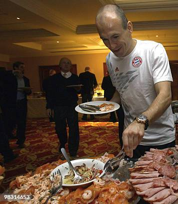
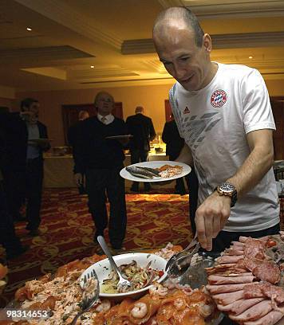

Kami merupakan komuniti yang penuh semangat, terdiri daripada pencinta makanan, chef, dan pengembara kulinari yang berdedikasi untuk meraikan kepelbagaian masakan dari seluruh dunia. Misi kami adalah untuk memupuk pertukaran budaya melalui makanan, menyokong amalan kulinari lestari, serta memberi inspirasi kepada semua untuk meneroka citarasa dan tradisi baharu. Sama ada anda ingin berkongsi resipi, belajar daripada pakar, atau sekadar menikmati kisah tentang makanan, inilah tempat yang sesuai untuk memulakan perjalanan kulinari anda.
Mari kita nikmati dunia — satu suapan pada satu masa!
 
